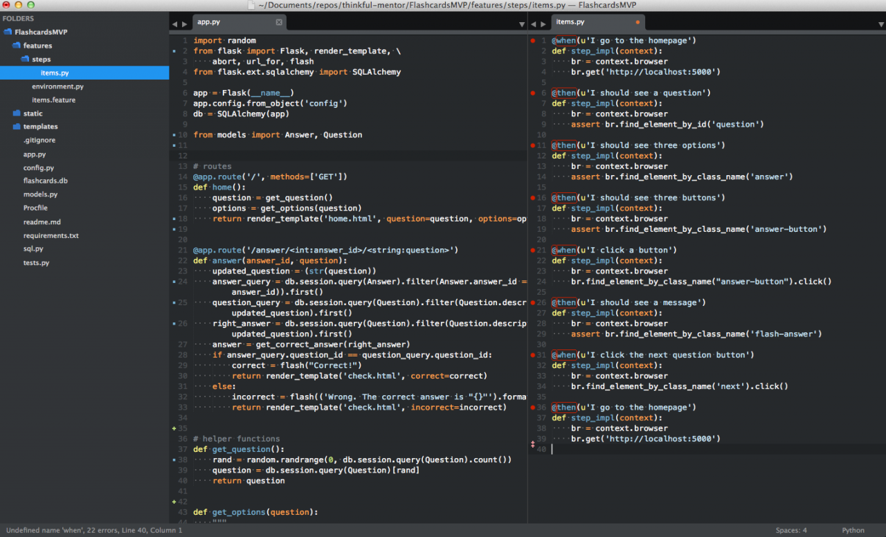
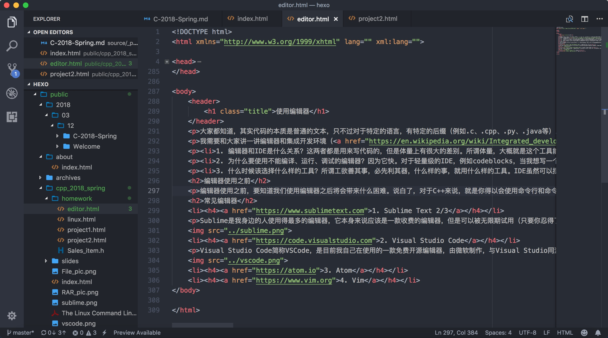
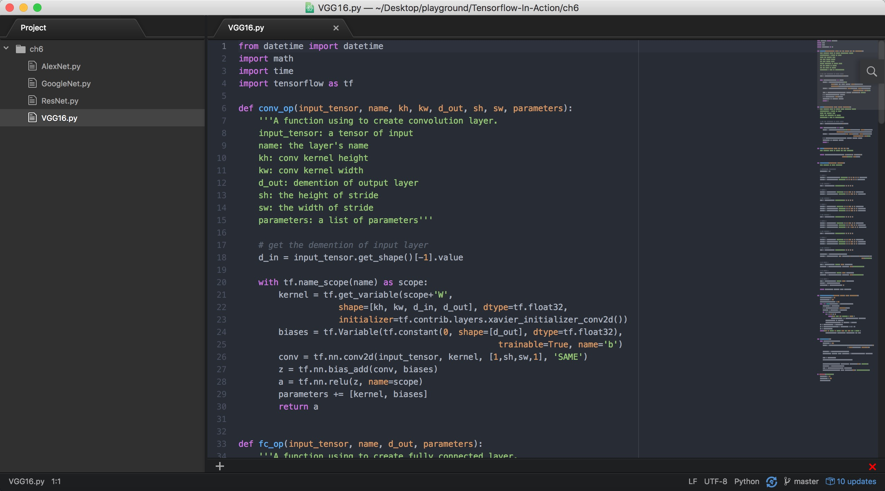
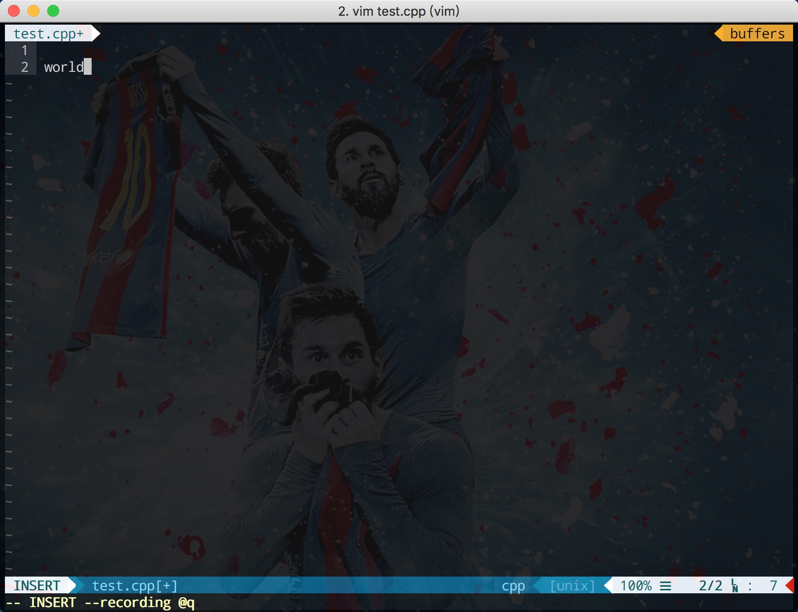

大家都知道，其实代码的本质是普通的文本，只不过对于特定的语言，有特定的后缀（例如.c、.cpp、.py、.java等）。这个意思就是，其实Windows里的那个最简单的文本编辑器，就可以用来写任何代码了，并且在我们的同学中也已经有人用它来写前端的代码。然而白底黑字，没有格式和对齐，看起来是无比的艰难，这时候就体现出了一个好的编辑器的作用。
我需要和大家讲一讲编辑器和集成开发环境（IDE）的一些QA：
编辑器使用之前，要知道我们使用编辑器之后将会带来什么困难。说白了，对于C++来说，就是你得以会使用命令行和命令行编译器作为前提，否则使用编辑器无异于给自己添堵。而对于HTML这样的程序来说，解析是靠浏览器的，你直接用浏览器打开你写好的HTML页面即可，所以不会使用命令行也没什么太大的关系。但是呢，作为计算机、软件工程专业的学生，我还是建议各位熟悉命令行，未来有99%的可能性会用得上。
Sublime是我身边的人使用得最多的编辑器，它本身来说应该是一款收费的编辑器，但是可以被无限期试用（只要你忍得了它的广告的话）。Sublime的口碑应该说是相当好的，有丰富的扩展插件，如果算上Sublime 2和3两个版本的插件，它应该是所有编辑器中插件最多的，且我写前端的很多同学都对Sublime爱得深沉。不过吧，我个人不知道为啥，反正用Sublime总感觉不顺手，一方面忍不了广告却掏不出它需要的几十美金，另一方面总感觉写起代码来别扭，虽然不知道为啥，反正我现在是没用它了。不过各位看官大可不必在意我的感受，在编辑器使用人数排行榜上，Sublime仍然高居榜首。
Visual Studio Code简称VSCode，是目前我自己在使用的一款免费开源编辑器，由微软制作，与Visual Studio同源。这款编辑器呢，我感觉对比其他编辑器来说，集成度更高，例如一些其他编辑器中需要安装插件才能完成的直接打开控制台、Git等功能，VSCode都已经集成。且VSCode支持直接在编辑器中设置断点进行debug，但是配置上十分麻烦，不建议新手尝试（因为我也玩不转 T_T）。我对VSCode还是比较满意的，满足了我日常写代码的需求，基本上从做完本科毕业设计以后我就极少使用IDE了，都是靠Atom和VSCode完成日常工作。
如果说VSCode来自微软可以说是大家闺秀的话，Atom的来头也不小。Atom是由Github做的一款免费编辑器，是我在使用VSCode之前使用的编辑器，现在也还放在电脑里没删呢。Atom给我最大的感触就是非常小清新，整个界面非常美观让我极为喜欢，包括我现在用的VSCode我也找了特别的插件将编辑器风格换成了Atom的样子。并且呢，Atom依托Github这么个平台，可用的插件也是数不胜数的，但是由于国内有墙的原因各位应该懂的，而Atom的插件库都在国外，所以安装起来插件会比较麻烦，需要用git克隆插件镜像到它的插件包文件夹内，然后使用npm进行安装，需要的同学可以寻找网上的教程。
然后我们就要来到Vim了，一款神一样的编辑器。有句话叫做这个世界上只有两种编辑器，一种是Vim和GNU emacs，另一种是其他编辑器，可见Vim地位之高贵。诚然，Vim确实是非常厉害的编辑器，如果你能够熟练地应用Vim，那你将会成为coding速度最快的程序员。但是Vim的门槛非常高，入门及其困难，能够适应Vim这种编程风格的人也不多，如果无法适应，只会事倍功半。Vim的插件也是多如牛毛的，可以把Vim这样一个编辑器改造成各式各样的应用场景，甚至拿来玩游戏。Vim这个编辑器不需要安装，已经集成在几乎所有Linux系统中了，需要用命令行启动，且Vim的应用方式与其他编辑器不同，Vim直接在命令行中就进行了编辑，而不像其他编辑器一样会打开一个应用程序，并且和打开时候的命令行是独立存在的。那为什么说Vim上手困难呢？我们来做一个例子：打开命令行，输入
vim test.cpp //如果提示vim没有找到，请输入vi test.cpp，vi和vim是一样的。打开以后大概就是这个样子了，可能你们看到的没有绿色的底边栏，也没有左边的行号，只有个普通的界面，看起来啥都没有。不过这个没关系，我们可以尝试一下在我们创建的这个test.cpp文件中打字，输入
hello world输入完以后，我们看到了这样的画面：
我们一脸懵逼？我的hello去哪了？好咱先不管这个hello去哪了，我们先想办法把现在写好的东西存一存，好不容易写下来点东西，不存下来可惜了。好的我们按Ctrl+S，嗯，存下来了，那我们可以关了。咦？怎么关呢？哦左上角有个红叉叉，就点他，走你。咦？弹出个框？我不管，我要关闭，走你。Good，大功告成。
于是乎，我们再次打开Terminal，看看我们的test.cpp还在不在，于是输入ls。哦豁！不见了！然后我们重新输入：
vim test.cpp //如果提示vim没有找到，请输入vi test.cpp，vi和vim是一样的。发现它提示说，发现一个"swap file"叫做".test.cpp.swp"的文件，这说明了什么？说明，它曾经来过。好吧，我们的第一次Vim之旅就这样以失败告终了。原因我告诉大家，因为我们的操作方式不对，参见下文。我们正确的方式应该是：
vim test.cpp //如果提示vim没有找到，请输入vi test.cpp，vi和vim是一样的。
出现刚才那个提示".test.cpp.swp"的界面，按下Enter
按下i键 //注意，不能大写，以"i"的方式进入输入模式
输入hello world
按下ESC //退出到第一个层级
按:键 //就是shift+;，此时看见左下角有:在闪动
输入wq //w是保存，q是退出
按下Enter //发现退出去了
ls //看到了test.cpp文件在文件夹中了
cat test.cpp //就可以看到我们的hello world了其实Vim非常酷，是能让你觉得自己是一个黑客的编辑器，但是Vim的方式并不寻常，Vim相当于是有两个层级的交互平面，第一个层级就是我们刚刚输入完vim命令的层级，另一个层级就是编辑时候的层级，两个层级有完全不同的两种交互方式，第一个层级的交互方式最为特殊，下图就是第一层级的交互命令，而第二层级相对简单，就是普通的编辑器模式。这个东西的话教我就不教了，时间成本太高，不是一周两周学得会的，也不是人人都适应得了。并且我也不推荐你们现在就开始学习Vim，因为它确实比较高深，祝各位同学自学愉快~